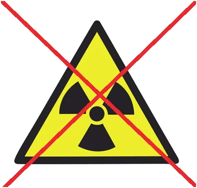

“Promieniowanie jonizujące uranu zubożonego”
Wiosna, czas nad rzeczkę, ale ktoś chce nam humor popsuć i musimy poszperać tu i tam.
"Promieniowanie jonizujące uranu zubożonego"
Na temat zagrożeń pochodzących od zubożonego uranu wydano wiele opinii, zarówno potwierdzających szkodliwość jak i ją negujących. Promieniotwórczość uranu zubożonego wynosi około połowy aktywności naturalnego uranu. Według danych szacunkowych, promieniowanie amunicji bojowej zawierającej uran zubożony (zarówno magazynowanej, transportowanej, jak i zalegającej w glebie) jest zaledwie 4-krotnie większe od promieniowania naturalnego, pochodzącego ze źródeł naturalnych, stąd nie może wpływać na zdrowie człowieka.

Toksyczność
Wysoką toksyczność wykazują pyły uranu i pyły tlenków uranu, wydzielające się podczas spalania penetratora kinetycznego z pocisku kinetycznego podczas przebijania się przez pancerz (wydzielone w wyniku tarcia ciepło zapala piroforyczny uran). Mogą one wniknąć do organizmu z wdychanym powietrzem lub poprzez kontakt ze skórą i połknięcie z posiłkami. Związki chemiczne uranu kumulują się między innymi w kościach, gdzie zarówno efekty trujące (charakterystyczne dla metali ciężkich), jak i pochodzące od promieniowania, są dużo bardziej szkodliwe." https://pl.wikipedia.org/wiki/Uran_zubo%C5%BCony
Czyli:
Promieniotwórczość znikoma i daleko, metal ten jest skrajnie ciężki i opada po wybuchu nawet jako pył.
W postaci ewentualnych tlenków w takiej odległości stężenia w atmosferze skrajnie niskie. Bardziej się obawiam azbestu z klocków hamulcowych na zakurzonej ulicy. Może latem, gdy się kurzy, maseczka anty-azbestowa?
Niestety są w sieci porównania do Czarnobyla. Duży grzyb wybuchu na filmach nie ma tu nic wspólnego z bronią i energią jądrową, to duże, konwencjonalne "bum".
Porównywanie pożaru bloku jądrowego w czynnej elektrowni i EWENTUALNEGO, nie potwierdzonego pożaru amunicji ze zubożonym uranem to poważna pomyłka. To jak porównać wybuch grantu pod czapką vs. strzał z nadmuchanej, papierowej torby. Bojaźliwy człowiek umiera w obu przypadkach.
W punktach pomiarowych promieniowanie w normie. Widziałem ten "wykres grozy", jest tam skok z 90 na 140 uS/h... To zupełnie normalny stan. Pamiętacie jak w 2020 zgony w Polsce skoczyły z 1250 na 1256 i wszyscy zostali w domach na pół roku.
My jesteśmy Lachy, a to są strachy na Lachy. https://pawelklimczewski.pl/2021/08/22/c-19-to-jest-wojna-informacyjna-kwestie-medyczne-to-tylko-chwilowa-taktyka/
Paweł Klimczewski